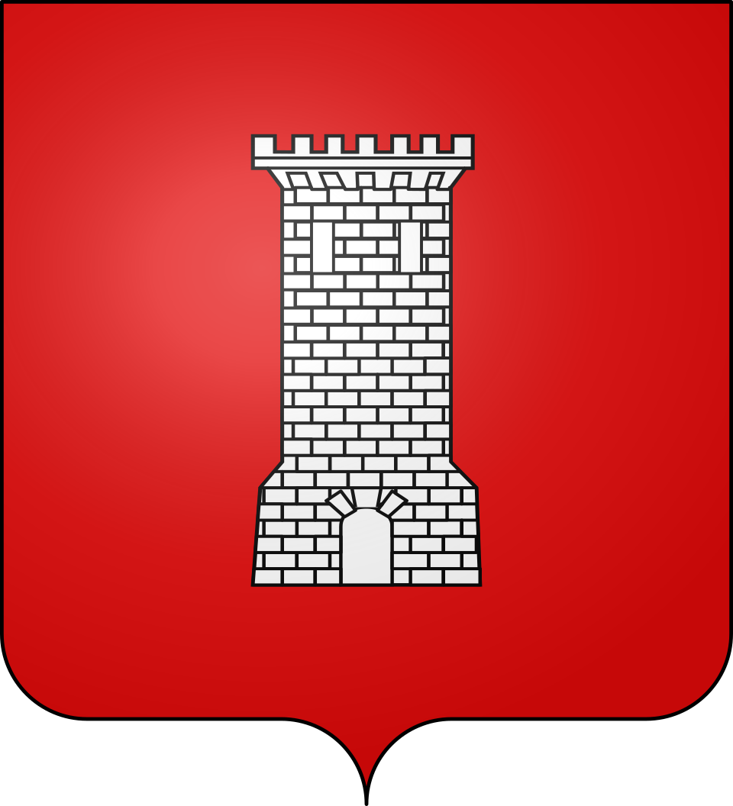

SumèneLe bourg cévenol du Rieutord


⟹ Ganterie · Tannerie · Vallée cévenole ⟸

Avant de porter le nom qu'on lui connaît aujourd'hui, le territoire de Sumène appartient à cet ensemble que les géographes et les historiens désignent sous le nom de Cévennes : un massif schisteux et granitique, découpé de vallées profondes, où l'habitat humain s'est de tout temps organisé autour de la châtaigneraie, seule ressource capable de nourrir durablement une population de montagne sur des sols pauvres et pentus.
Un bourg de piémont, entre montagne et garrigue. Sumène occupe une position intermédiaire entre les hautes Cévennes et la plaine languedocienne, au bord du Rieutord, ce qui lui a permis de développer très tôt une activité artisanale et industrielle liée à l'eau. Le village constituait alors le passage obligé pour rejoindre Le Vigan, avant l'ouverture d'une route reliant directement Ganges au Vigan.
L'essor de la tonnellerie, entre 1490 et 1560. Avant même la ganterie, c'est la tonnellerie qui assure au tournant des XVe et XVIe siècles le premier essor économique de Sumène, activité qui se maintient jusqu'au XIXe siècle et dont les tonneaux s'exportent alors dans tout le Languedoc et le sud de la France, jusqu'en Algérie, par les ports de Marseille et de Sète. La corporation des tonneliers, si puissante qu'elle possède sa propre chapelle dans l'église paroissiale, contribue au développement conjoint de l'industrie lainière et du travail du cuir.
Une place forte huguenote et le siège de 1568. C'est également à cette époque que la population suménoise se tourne massivement vers le protestantisme. En 1568, dans le contexte tendu qui suit le massacre de la Michelade à Nîmes, Balthazar de Saint-Étienne, baron de Ganges, tente de reprendre par la force le village passé aux mains des huguenots ; il y parvient temporairement avant d'être tué lors de la contre-attaque qui rend le bourg à la Réforme. La ville reste ensuite quatre-vingts ans sans prêtre catholique et devient, après Nîmes, la seconde ville du Gard à être pourvue d'un pasteur. La devise de la commune, « Ayant Dieu pour défense, nous ferons résistance », forgée durant ces guerres de Religion, est encore gravée aujourd'hui sur la porte du Pied de Ville, à l'entrée du vieux bourg.
La tradition de la ganterie et de la tannerie. Dès le XVIIIe siècle, Sumène développe une industrie du cuir réputée, tannerie et surtout ganterie, activité qui emploie une large partie de la population locale jusqu'au XXe siècle et qui vaut au bourg d'être associé, avec Millau plus au nord, à cette spécialité artisanale du sud du Massif Central.
La culture du châtaignier, que l'on désignait localement du nom d'« arbre à pain », structure pendant des siècles l'économie de subsistance cévenole. Chaque famille dispose de ses propres châtaigneraies, aménagées en terrasses soutenues par des murets de pierre sèche, les bancels, dont le tracé façonne encore aujourd'hui le paysage. La châtaigne, séchée dans des clèdes, petits bâtiments à claire-voie destinés à ce séchage lent au-dessus d'un feu couvant, se conserve toute l'année sous forme de farine et permet de traverser les mois d'hiver.

Une économie complétée par la soie et la châtaigne. Comme ses voisines cévenoles, Sumène a également connu l'élevage du ver à soie et la culture de la châtaigne, activités traditionnelles qui ont longtemps coexisté avec le travail du cuir avant le déclin industriel du XXe siècle. Non loin du bourg, le prieuré roman de Saint-Martin de Cézas, ancienne enclave catholique en terre majoritairement protestante, brûlé, pillé et finalement abandonné à la fin du XIXe siècle, fait depuis 1986 l'objet d'une restauration bénévole menée pierre par pierre.
La Réforme protestante bouleverse en profondeur l'identité cévenole à partir du XVIe siècle. Après la révocation de l'édit de Nantes en 1685, qui interdit le culte réformé sur l'ensemble du royaume, les Cévennes deviennent le théâtre d'une résistance religieuse clandestine connue sous le nom de « culte du Désert » : assemblées secrètes tenues dans les garrigues et les vallées reculées, sous la conduite de prédicants itinérants risquant leur vie pour maintenir vivante la foi réformée. Cette résistance dégénère, entre 1702 et 1704, en un conflit armé ouvert, la guerre des Camisards, sévèrement réprimée par les troupes royales.
L'exode rural du XIXe et surtout du XXe siècle, accéléré par le déclin conjoint de la sériciculture et de l'agriculture de montagne, vide progressivement de nombreux hameaux cévenols de leur population active, laissant à l'abandon nombre de terrasses et de mas isolés. Depuis les dernières décennies du XXe siècle cependant, un mouvement de néo-ruraux, attirés par la qualité de vie et la beauté des paysages, contribue à une lente renaissance démographique et patrimoniale de plusieurs vallées cévenoles.

Aujourd'hui, Sumène conserve une identité marquée par ce passé : ancien bourg industriel du piémont cévenol, la commune s'inscrit pleinement dans la zone Cévennes, entre mémoire patrimoniale et vie locale contemporaine. Cette continuité, entre héritage et vie quotidienne, fait aujourd'hui tout l'intérêt d'une visite attentive à l'histoire du lieu.
Sumène a longtemps vécu du travail du cuir, tannant et gantant la peau au fil du Rieutord, entre tradition cévenole et savoir-faire artisanal transmis de génération en génération.
Synthèse historique — L'Âme des Régions